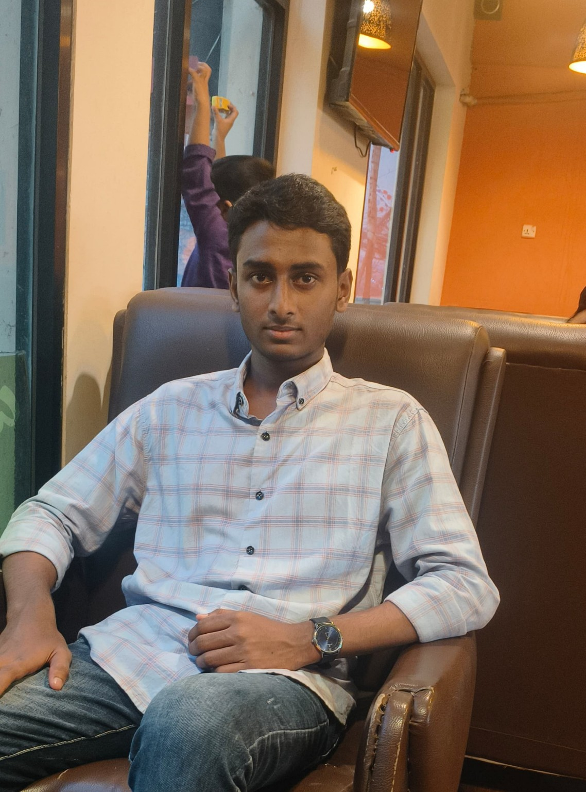

MARUF BILLAH / SYNTAXMARUF
A curious mind.
A builder's instinct.
Hi, I'm Maruf. A CSE student
learning through code and bringing practical
ideas to life.
Daffodil International University

01 / SELECTED WORK
Small ideas. Real code.
From the terminal to the browser.
Explore the process behind the projects.
No projects found.
Try another keyword or explore all the work.
02 / THE PERSON BEHIND THE CODE
Curiosity is
my starting point.
I'm Maruf, a Computer Science & Engineering student at Daffodil International University. I enjoy taking an idea apart, understanding the logic, and turning it into something useful.
C is my foundation. I'm practicing programming and problem solving while building my skills on the web. Further ahead, I want to explore AI and cybersecurity.
More of my coding journeyMy working toolkit
ALWAYS EVOLVINGNext to explore Python · Linux · AI
03 / OUT IN THE OPEN
The code behind the work.
Project descriptions are grounded in the linked public source. Browser demos are adaptations for this portfolio.
STILL LEARNING. STILL BUILDING.
Let's connect the dots.
Follow the journey, explore the code, or say hello on GitHub.